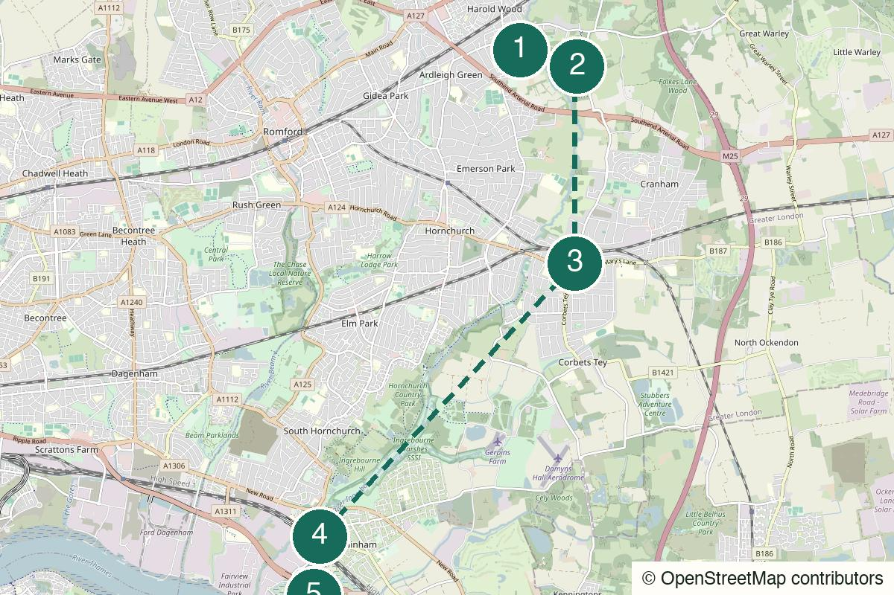

Outside London Not yet field-walked
Marlow to Hambleden
A train-out Thames walk for river meadows, two locks, a proper village pub and the satisfying simplicity of walking back the way you came.
Start Marlow rail station
Not yet field-walked · verify live details
A direct train from Stratford, then Pages Wood, the Ingrebourne and the outer-London fields that do not feel quite suburban.
Desk-checked or awaiting another field walk – details not yet reconfirmed.
Desk-checked from current London Loop and National Trust information in July 2026. The official Harold Wood–Upminster Bridge section is 7.2 km; this 15 km version continues towards Rainham Hall and needs a field walk before the exact joins are described as final.
No field notes from readers yet — share one if you walk it.
Take the direct Elizabeth line from Stratford to Harold Wood. Return from Rainham using the live planner; a change is normally needed to reach Stratford, and engineering work can change the practical route.
Harold Wood rail station – Leave the Elizabeth line station and use the official London Loop guide for the first move into Harold Wood Park.
Harold Wood Park
Open detailed route (opens in a new tab)
Prototype long version: follow the official London Loop directions to Upminster Bridge, then use the National Trust Rainham Hall walking information and live mapping for the continuation. Check the Loop news page, local conditions and train services; do not follow an invented GPX.
We never ask for your location.
Get the direct Elizabeth line out of Stratford, then refuse the usual urge to treat the eastbound suburbs as a destination in themselves. Harold Wood Park opens the door; Pages Wood and the Ingrebourne do the deeper work. Upminster Bridge is the useful pause, then the longer version continues with the river towards Rainham Hall and a station finish. It is a quiet route with a proper outward arc, not just a long local stroll.
Not an empty wilderness, a sealed path or a completely signed 15 km route all the way to Rainham.
A strong date route if both people genuinely like walking and do not need a venue to perform the day for them.
Best for two to four people who will agree on the Upminster Bridge decision before lunch: short official route or long prototype continuation.
The official first section is a good solo walk. Take the Rainham continuation only with a downloaded map, enough daylight and comfort with public-path navigation.

Harold Wood station, Gubbins Lane, RM3 0BL
From the start Leave the station for Harold Wood Park and use the official London Loop guide from its first waymarked section.
The direct Elizabeth line is the only dramatic part of the logistics. From the park onwards, let the day turn quiet without trying to hurry it.
Walk here from the station to Harold Wood station → Harold Wood Park (opens in a new tab)Official information for Harold Wood station → Harold Wood Park (opens in a new tab)
Pages Wood, Havering
From the previous stop Stay on the signed London Loop, using the guide at every branch. The river and woodland are the line; do not improvise through muddy ground to save a few minutes.
Community woodland, a small river and the first point where the route stops feeling like a clever escape from Stratford and starts feeling like a day outside it.
Walk from the previous stop to Pages Wood + River Ingrebourne (opens in a new tab)
Upminster Bridge station area, RM14
From the previous stop The official section finishes near Upminster Bridge. This is the decision point: take the District line home, or continue only after checking the Rainham line on a live map.
A practical, grown-up pause rather than a destination restaurant. There are cafés and pubs around the official section end; carry food so their availability does not decide the walk.
Walk from the previous stop to Upminster Bridge – useful middle pause (opens in a new tab)Official information for Upminster Bridge – useful middle pause (opens in a new tab)
Rainham Hall, Broadway, RM13 9YN
From the previous stop Continue with the official London Loop/Rainham Hall directions and a live map. Keep to public paths and do not turn the river edge into a shortcut through private ground.
The longer second half gives the day its proper shape: still low, still river-led, but less suburban and more like the outer edge of a large county town.
Walk from the previous stop to Ingrebourne continuation → Rainham Hall (opens in a new tab)Official information for Ingrebourne continuation → Rainham Hall (opens in a new tab)
Rainham rail station, RM13
From the previous stop From Rainham Hall, use the live walking route to the station and choose the current best connection back to Stratford.
End at the station rather than forcing an additional venue. The route has already done what it needed to: one line out, one river valley across, one way back.
Walk from the previous stop to Rainham Hall → Rainham station (opens in a new tab)Official information for Rainham Hall → Rainham station (opens in a new tab)
Mostly level footpaths, grass, tracks and riverside ground, with one or two gentle slopes. Paths around the Ingrebourne can be rough and muddy after rain; the longer continuation needs live navigation at its joins.
The official guide specifically warns that paths between River Drive and Wingletye Lane can be very muddy. Wear proper footwear after rain and do not treat grass paths as a paved alternative.
Open pasture beside Upminster has little shelter. Carry a layer and water even though the route is inside Greater London.
Use the marked road crossings and live map at village and station approaches. Do not shortcut across golf-course or private land.
Expect gates, uneven paths and countryside access features. This is not a reliably step-free route.
Carry food and water. Harold Wood and Upminster Bridge have cafés/pubs, but the countryside sections should not depend on a kitchen being open.
Use facilities at Harold Wood before leaving. Station and venue facilities later in the day should be treated as a bonus.
Usually usable but do not rely on it alone; download the Loop guide before departure.
A café or pub at Upminster Bridge is the useful middle pause. Check live opening hours and keep a packed-food fallback.
Use the official London Loop section from Harold Wood to Upminster Bridge for the shorter 7.2 km version. The route also has bus exits at River Drive and Hall Lane, subject to live service checks.
Nearest practical station: Rainham rail station
From Rainham Hall or village, use a live map to reach Rainham station and check the best current return to Stratford before stopping for anything else.
Earlier exit: Upminster Bridge Underground station – The official London Loop section ends here. Use the District line if the weather, mud or daylight makes the Rainham continuation the wrong choice.
A dry spring, autumn or winter day
Upminster Bridge is the planned stop, but the countryside sections need water and a packed snack. A pub open at noon should be a bonus, not infrastructure.
The signed 7.2 km Harold Wood-to-Upminster Bridge route: woodland, Ingrebourne and an easy District line exit.
The prototype 15 km day: official Loop section first, then the river-led extension to Rainham Hall and station.
Use the official short section only if the ground is manageable; the guide notes very muddy paths around River Drive and Wingletye Lane. In sustained rain, postpone.
Continue to Rainham only when ground, daylight and energy remain generous. The official Upminster Bridge ending is not a lesser version.
Upminster Bridge is the clean planned exit, with District line. The official guide also notes bus exits at River Drive and Hall Lane; check live service before relying on them.
Help keep it useful
Closed gates, changed hours and the point where you bailed are more useful than polite applause.